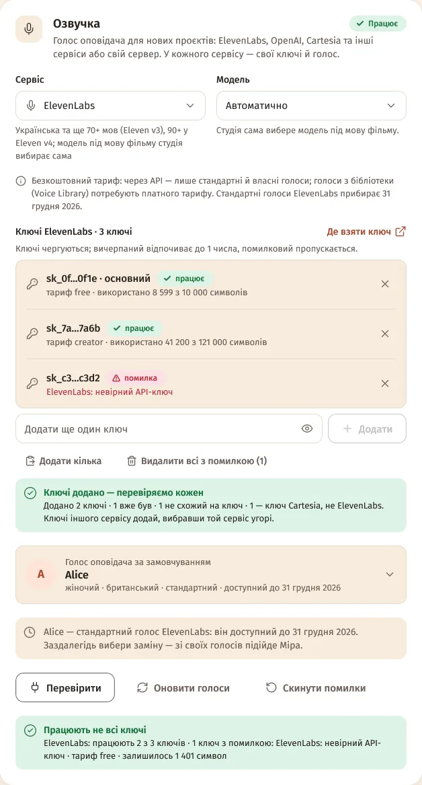
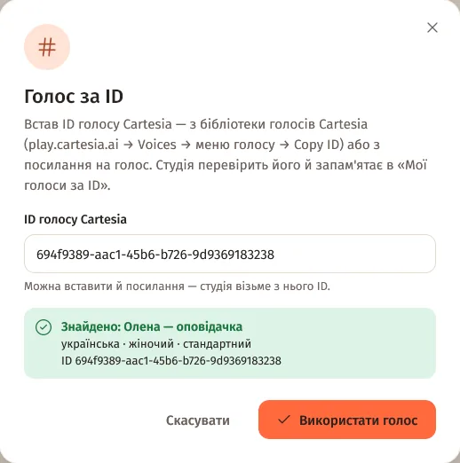

Зміст сторінки
Свої ключі в кожного сервісу
Налаштування → Підключення → «Озвучка». Перемкнув «Сервіс» — ключі, модель і голос попереднього збереглися. Повернувся — усе на місці.

Ключі пачкою
- «Додати кілька» під списком ключів.
- Встав ключі — кожен з нового рядка, через кому чи пробіл. Підписи на кшталт
key1:чиELEVENLABS_API_KEY=студія пропустить. - «Додати й перевірити». Кожен ключ перевіряється одразу — дешевим запитом, без озвучки.
- Ключ іншого сервісу не додасться — студія скаже, чий він («… — ключі ElevenLabs, не Cartesia»).
- «Видалити всі з помилкою (N)» прибирає зламані ключі, «Скинути помилки» — дає їм ще один шанс.
- Стани: «працює», «вичерпано до 1 …» (місячний ліміт), «помилка» (пропускається годину), «відпочиває до …».
Довгі списки ключів
Більше трьох ключів — список згортається в один рядок-підсумок («52 ключі · 50 працюють · 2 з помилкою…»). «Показати всі» — пошук за маскою чи станом і фільтри «Працюють», «Помилка», «Вичерпані». Так само — ключі Google AI Studio.
Голос за ID
Для Cartesia і ElevenLabs — якщо голосу немає в списку акаунта:
- У виборі голосу → «Вставити ID голосу».
- Встав ID або посилання на голос (студія візьме з нього ID) → «Знайти голос».
- «Знайдено: ім'я» з мовою й статтю → «Використати голос».

Голос лишається в «Мої голоси за ID» — до 50 на сервіс; «Забути цей голос» прибирає його.
ElevenLabs: що змінюється
Стандартні голоси ElevenLabs доступні до 31 грудня 2026. Якщо такий голос у тебе за замовчуванням, студія попередить і підкаже заміну зі своїх голосів.
- На безкоштовному тарифі через API працюють стандартні й власні голоси. Голоси з бібліотеки (Voice Library) — лише на платному тарифі, студія позначає їх «потрібен платний тариф ElevenLabs».
Ключі Google AI Studio
- Картка «Google AI Studio»: ключі по одному або «Додати кілька» (ключ
AIza…, 39 символів). Кожен перевіряється одразу, безкоштовно. - Стани: «працює», «відпочиває до …» (хвилинний ліміт — за хвилину, денний — опівночі за тихоокеанським часом), «помилка» (пропускається годину).
- Ліміти діють на проєкт Google — бери ключі з різних проєктів.
- Ці ключі потрібні й для «Перезняти за прикладом».
AssemblyAI для розпізнавання мови
«Розпізнавання мови» (для «Своєї озвучки») → «AssemblyAI»: «API-ключ AssemblyAI» і «Де обробляти» — США або ЄС (дані не залишають Європу). Українську студія розпізнає моделлю Universal-2 сама. «Перевірити» — безкоштовно.
Питання
Куди діваються ключі старого сервісу, коли я перемикаюсь?
Нікуди: кожен сервіс зберігає свої ключі, модель і голос. Повернешся — усе на місці.
Де лежать ключі?
Лише на твоєму комп'ютері, у config.json. Стан ключів (без самих ключів, лише маски) — у tts-keys.json.